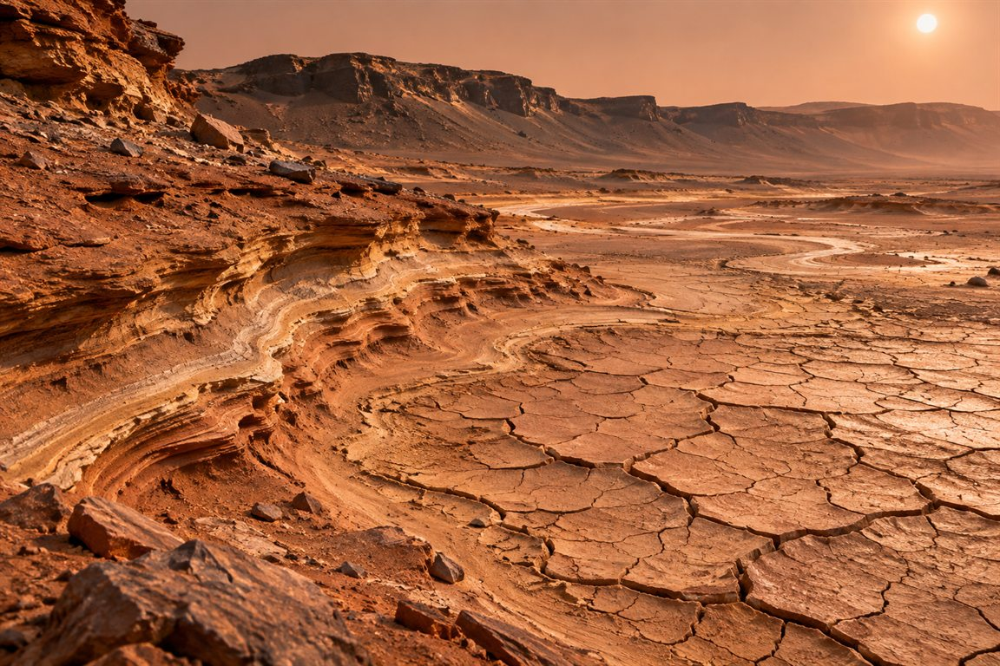

Ancient Water on Mars and Climate Loss
Trace the evidence for ancient water on Mars through rover observations and NASA research. The dossier connects past lakes and rivers to the mechanisms that may have changed the planet’s climate.

On this page
Summary
This is the baseline note for the Mars package to answer a simple but central question: what part of the story about a habitable ancient Mars is supported by strong science. The NASA sources used here do not talk about ruins, artificial canals or civilizations. They talk about a planet that once had liquid water, more favorable chemistry, and a climate evolution that ended up degrading that surface habitability.
What the sources actually contain
- NASA's official overview of today's Mars and its climate history
- synthesis of evidence of past water on the surface
- context on atmospheric loss, cooling and profound environmental change
- recent results linked to Curiosity on carbonates and evaporation/salinity/wet-dry cycles scenarios
Useful thesis of this note
The strong statement is not Mars was Earth 2.0, but something more precise:
1. Ancient Mars was less hostile than modern Mars
2. there was surface liquid water at different times and environments
3. Martian climate transition includes loss of atmosphere, cooling and extreme desertification
4. that history makes it reasonable to investigate past habitability, not automatically assume life or civilization
What do we know relatively well?
1) There was liquid water on the surface
It is no longer a marginal claim. The official NASA package assumes that Mars had rivers, deltas, lakes and environments where liquid water existed during ancient stages of the planet.
2) Mars changed its climate regime
The difference between ancient Mars and current Mars is one of the most solid axes of the topic. Today a cold, dry environment dominates, with a tenuous atmosphere and hostile surface. The standard scientific reading is that that final state does not describe the entire history of the planet.
3) The central problem is the loss of surface habitability
The recent results don't just matter because they show minerals: they matter because they help reconstruct how a potentially wetter environment ended up becoming unviable for stable surface water.
Climate loss mechanisms that matter here
Atmospheric loss
A weaker atmosphere reduces pressure and ability to hold stable liquid water.
Planetary cooling
The loss of favorable thermal conditions pushes water toward ice, sublimation, or transient states.
Evaporation / salinity / extreme cycles
Part of Curiosity's interest is that certain carbonates and sedimentary contexts fit better with scenarios of intense evaporation, very saline waters or wet-dry cycles, all relevant to limited and changing habitability, not necessarily sustained.
What the Curiosity block actually contains
The useful point is not to memorize every geochemical detail, but to understand the general direction of the find:
- Gale Crater serves as an archive of past environments
- carbonates help infer chemistry of water and atmosphere
- the signal favors a more complex history of environmental transformation than the simple
Mars had water and then did not - habitability may have been local, intermittent or decreasing
Why it matters within X Files
- puts scientific floor to the Mars package
- prevents the entire domain from being hijacked by visual anomalies
- allows separating
ancient wet MarsfromMars with architecture - helps you better read notes like Ancient Ocean on Mars: Evidence vs Open Debate, Mars Canals: Schiaparelli, Lowell, and the Interpretive Error and Face on Mars: Official Image Reanalysis
What this note does allow us to say
- Ancient Mars had much more favorable environments than today's
- there was surface liquid water and relevant hydrological processes
- Martian climate loss is a serious and active scientific problem
- The search for past life has a rational basis
What this note does not allow to say
- that there was a global ocean already proven without discussion
- that there was martian civilization
- that any structure apparent in images is artificial
- that
past habitabilityis equivalent tovida demostrada
Relationship with the Martian myth
This note serves as an antidote to two opposing errors:
1. simplistic skeptical error: believing that everything related to ancient Mars is pure folklore
2. speculative error: using any ancient water sign as an automatic staircase to ruins or intelligence
The useful position is in the middle: yes there was a more environmentally interesting Mars; That does not mean that every subsequent narrative leap is validated.
Reading operating rule
- If a note talks about
ancient Mars, first pin it here - If the claim depends on geometric shapes, compare it with Mars Canals: Schiaparelli, Lowell, and the Interpretive Error and Face on Mars: Official Image Reanalysis
- if the claim depends on large-scale paleohydrology, connect it with Ancient Ocean on Mars: Evidence vs Open Debate
Related
Ancient Ocean on Mars: Evidence vs Open Debate Mars X Files: Anomalies vs Official Readings Mars Canals: Schiaparelli, Lowell, and the Interpretive Error Face on Mars: Official Image Reanalysis Cydonia: Martian Mystery Region Research map Archive home